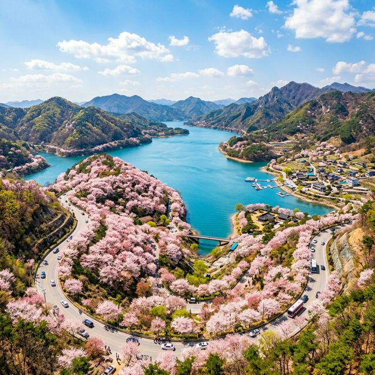
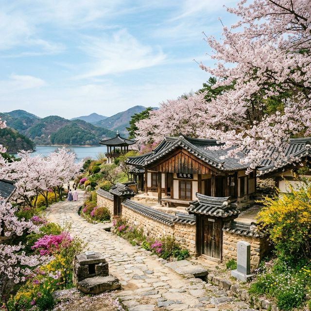
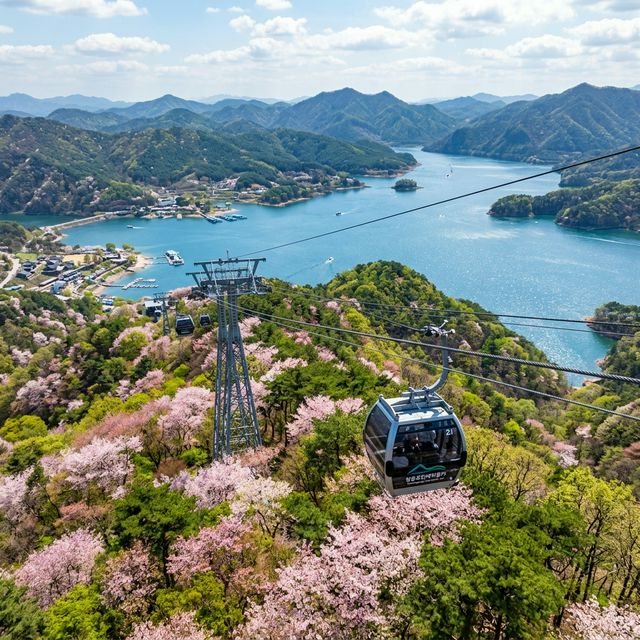

2026년 4월 14일 현재, 제천 청풍호반의 벚꽃은 약 80~90%의 개화율을 보이며 절정의 아름다움을 뽐내고 있습니다. 지대가 높고 물가에 위치한 지리적 특성 덕분에
서울이나 경기 남부보다 약 1주일가량 늦게 만개하는 것이 특징이죠. 산바람이 불어올 때마다 흩날리는 꽃비는 그야말로 장관을 이루며, 이번 주말까지는 풍성한 벚꽃 터널을 감상할 수 있을 것으로
예상됩니다.
올해 축제는 '청풍의 봄, 꽃으로 피어나다'라는 테마로 다양한 문화 예술 공연과 지역 특산물 장터가 마련되었습니다. 특히 밤이 되면 벚꽃 나무마다 설치된 LED 조명이
켜지며 낮과는 전혀 다른 몽환적인 분위기를 자아냅니다. 호수에 반사되는 달빛과 벚꽃의 조화는 오직 청풍호에서만 느낄 수 있는 특별한 감동이니, 일몰 직전의 골든타임에 맞춰 방문하시기를 추천드립니다.

제천 벚꽃 여행의 시작은 금성면에서 청풍면으로 이어지는 13km 구간의 드라이브 코스입니다. 창문을 열고 달리면 코끝을 간지럽히는 봄바람과 함께 흩날리는 벚꽃잎을 맞이할
수 있죠. 도로 양옆으로 수령 수십 년 된 왕벚나무들이 터널을 이루고 있어, 달리는 내내 감탄사가 절로 나옵니다. 굴곡진 도로 사이로 언뜻언뜻 보이는 푸른 청풍호의 물결은 드라이브의 즐거움을
더해줍니다.
드라이브 도중 잠시 멈춰 서서 사진을 남기고 싶다면 지정된 졸음쉼터나 안전한 갓길 구역을 이용하세요. 축제 기간에는 차가 많이 밀릴 수 있으므로, 오전 9시 이전 혹은
오후 4시 이후에 방문하는 것이 비교적 한적한 드라이브를 즐기는 비결입니다. 차창 밖으로 펼쳐지는 분홍빛 꽃물결은 도심 속 정체와는 차원이 다른 '기분 좋은 막힘'을 선사할 것입니다.
축제의 메인 행사가 열리는 청풍문화재단지는 충주댐 건설로 수몰될 위기에 처했던 보물과 문화재들을 그대로 옮겨온 야외 박물관입니다. 벚꽃 시즌이 되면 한옥의 고풍스러운
기와지붕 위로 벚꽃이 드리워져 마치 시간 여행을 온 듯한 느낌을 줍니다. 팔영루, 한벽루 등 역사적 건축물과 어우러진 봄 풍경은 전통적인 한국의 미를 가장 잘 보여주는 대표적인 장면이죠.
단지 내부를 천천히 산책하다 보면 '망월루'라는 정자에 도달하게 됩니다. 이곳에서 내려다보는 청풍호와 벚꽃길의 파노라마 뷰는 제천 최고의 포토 스팟으로 꼽힙니다. 축제
기간에는 전통 혼례 재현 행사나 국악 공연도 수시로 열리니, 아이들에게는 역사 공부를, 부모님께는 옛 추억을 선물하는 소중한 시간이 될 것입니다. 입장료가 아깝지 않은 풍성한 볼거리가 가득하니 꼭
들러보세요.

벚꽃을 발아래 두고 감상하고 싶다면 청풍호반 케이블카 탑승을 강력 추천합니다. 물태리역에서 출발해 비봉산 정상까지 이어지는 2.3km 구간 동안, 호수와 산을 수놓은
분홍빛 점들을 조망할 수 있습니다. 특히 크리스탈 캐빈을 선택하면 발아래가 투명하게 보여 더욱 짜릿한 경험이 가능하죠. 하늘 위에서 내려다보는 벚꽃길은 지상에서 볼 때와는 또 다른 입체적인 아름다움을
선사합니다.
케이블카 이용 시 팁이 있다면, 온라인 예매를 통해 대기 시간을 단축하는 것입니다. 축제 기간에는 현장 예매 시 1시간 이상 대기해야 하는 경우가 많지만, 예매자는 별도
라인을 통해 빠르게 입장할 수 있습니다. 비봉산 정상에 도착하면 약 531m 높이에서 다도해 같은 호수의 비경을 360도로 감상할 수 있으니 카메라는 필수입니다.
비봉산 정상은 사방이 호수로 둘러싸여 있어 마치 섬의 정상에 오른 듯한 착각을 불러일으킵니다. 이곳에 마련된 전망 테크에는 인스타그램용 인생샷을 찍을 수 있는 다양한
조형물과 포토존이 설치되어 있습니다. 멀리 월악산 영봉과 금수산 자락이 벚꽃 안개에 싸여 있는 모습은 지친 마음을 어루만져 주기에 충분합니다.
정상 cafe에서 시원한 에이드를 마시며 내려다보는 풍경은 그 자체로 치유의 시간이 됩니다. 2026년에는 새롭게 단장한 디지털 망원경을 통해 멀리 떨어진 벚꽃 터널의
세세한 모습까지 관찰할 수 있어 재미를 더합니다. 내려오는 길에는 모노레일을 이용해 가파른 숲속을 가로질러 보는 것도 좋습니다. 올라갈 때는 케이블카, 내려올 때는 모노레일을 섞어서 이용하는 '패키지
이용권'이 가장 합리적입니다.

미식가들에게 제천은 '약채락(藥菜樂)'의 도시로 알려져 있습니다. 약초가 들어간 건강한 음식을 뜻하는 약채락 비빔밥은 제천 여행에서 반드시 맛봐야 할 별미입니다. 갓
수확한 봄나물과 향긋한 약초가 어우러진 비빔밥 한 그릇이면 봄의 정취를 미각으로도 고스란히 느낄 수 있죠. 축제장 인근 식당 어디를 가도 기본 이상의 정갈한 맛을 자랑합니다.
또한, 청풍호 근처라면 민물 매운탕과 쏘가리회를 빼놓을 수 없습니다. 맑은 호수에서 직접 잡은 신선한 민물고기와 수제비를 넣어 얼큰하게 끓여낸 매운탕은 여행자의 허기를
달래기에 최고입니다. 벚꽃 아래에서 즐기는 도토리묵과 파전까지 곁들인다면 세상 부러울 것 없는 식도락 여행이 완성됩니다. 인근 전통시장에서 파는 제천 사과와 황기도 훌륭한 기념품이 될 것입니다.
인생 사진을 남기고 싶은 분들을 위해 숨겨진 출사 포인트를 공유합니다. 첫 번째는 청풍문화재단지 정문 건너편 언덕입니다. 이곳에서는 굽이치는 도로와 벚꽃 터널을 한
프레임에 담을 수 있어 자동차 광고 같은 느낌을 낼 수 있습니다. 두 번째는 '비봉산 역'의 전망 계단입니다. 뒤로 펼쳐지는 호수 배경이 넓게 잡혀 인물 사진이 아주 돋보이게 나옵니다.
세 번째는 벚꽃길 중간중간 나타나는 작은 정자들입니다. 정자 기와지붕 위로 벚꽃이 휘날리는 순간을 포착하면 동양화 같은 서정적인 사진을 얻을 수 있습니다. 사진을 찍을
때는 화이트 밸런스를 살짝 따뜻하게 조절해 보세요. 벚꽃의 분홍빛이 더욱 생생하게 살아나 SNS 업로드용으로 안성맞춤인 결과를 얻으실 수 있습니다.
주말 청풍 벚꽃축제는 주차 전쟁이라 해도 과언이 아닙니다. 행사 주차장이 좁지는 않지만, 워낙 많은 인파가 몰리기 때문이죠. 가장 추천하는 방법은 남제천 IC 방향에서
진입하지 않고, 수산면 쪽으로 돌아오는 우회 도로를 이용하는 것입니다. 거리는 조금 더 멀지만 교통 정체를 훨씬 덜 겪을 수 있습니다. 또한, 축제장 전용 셔틀버스를 적극 활용하는 것도 현명한
선택입니다.
오전 8시 이전에 도착한다면 행사장에서 가장 가까운 제1주차장에 여유 있게 주차할 수 있습니다. 2026년에는 네이버 지도와 연동된 실시간 주차 현황 서비스가 제공되니,
출발 전 반드시 잔여 대수를 확인하세요. 주차장 주변에는 자율 방범대원분들이 안내를 도와주고 있으니 지시에 잘 따라주시면 쾌적한 여행이 될 것입니다.
청풍호에서 벚꽃을 충분히 보셨다면 차로 30분 거리인 의림지로 향해보세요. 우리나라 최고의 수리시설 중 하나인 의림지는 호수 주변의 노송들이 벚꽃과 어우러져 기막힌 절경을
연출합니다. 특히 밤에 켜지는 야간 분수와 조명은 데이트 코스로 더할 나위 없죠. 최근 문을 연 '의림지 역사박물관'도 함께 둘러보시면 좋습니다.
액티브한 여행을 즐기신다면 옥순봉 출렁다리도 빼놓을 수 없는 코스입니다. 청풍호 하류에 위치한 이곳은 옥순봉의 기암괴석 옆으로 길게 뻗어 있어, 벚꽃 여행에 짜릿한 스릴을
한 스푼 더해줍니다. 옥순봉은 단양 산악회와 제천 산악회가 서로 자기 지역이라 우길 만큼 아름다운 곳이니, 벚꽃 시즌이 가기 전 제천의 모든 매력을 발굴해 보시길 바랍니다.
벚꽃은 찰나의 순간 피었다 사라지기에 더욱 소중하게 느껴지는 것 같습니다. 2026년 4월, 여러분의 가슴 속에 깊이 남을 인생 봄날을 계획하고 계신다면 주저 없이 제천
청풍호로 발길을 옮겨보세요. 하늘을 가린 분홍빛 커튼 아래를 걸으며 사랑하는 이와 나누는 대화는 그 어떤 선물보다 값진 기억으로 남을 것입니다.
제천의 벚꽃은 이제 막 마지막 불꽃을 태우고 있습니다. 이번 주말이 지나면 꽃잎은 바람에 흩날려 호수 위로 내려앉겠지만, 여러분이 담아온 추억은 영원히 향기롭게 남아있을 것입니다. 봄의 끝자락에서
만나는 가장 화려한 작별, 청풍호 벚꽃 축제에서 여러분을 기다리겠습니다. 즐거운 여행 되세요!